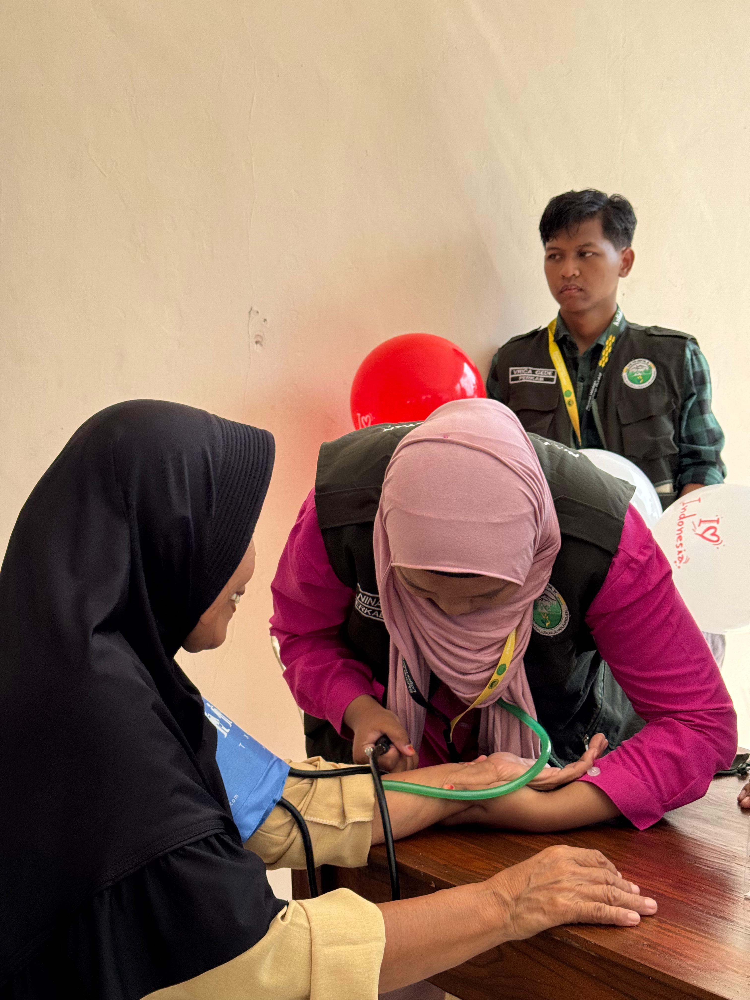
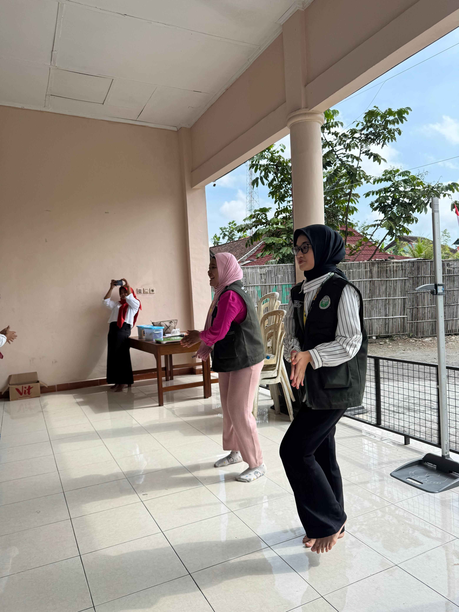

Senam Hipertensi di Posyandu Lansia: Menjaga Kesehatan dengan Semangat dan Kebersamaan
Gunungkidul – Suasana Posyandu Lansia di Desa Siyono III, Kecamatan Playen, Gunungkidul, tampak berbeda pada pagi yang cerah itu. Tidak hanya dipenuhi kegiatan pemeriksaan kesehatan rutin, namun kali ini juga hadir kegiatan tambahan yang dirangkai khusus: Senam Hipertensi dengan tema “Upaya Mencegah dan Menurunkan Hipertensi dengan Mudah dan Dimana Saja.”
Kegiatan ini menjadi bukti nyata bahwa posyandu tidak hanya sekadar tempat mengecek kondisi kesehatan, tetapi juga ruang edukasi, kebersamaan, dan hiburan bagi para lansia.Seperti biasa, kegiatan diawali dengan pemeriksaan kesehatan rutin. Para kader dan tenaga medis setempat dengan telaten membantu lansia menimbang berat badan, mengukur tinggi badan, mencatat tekanan darah, serta melakukan pemeriksaan kadar kolesterol dan gula darah.
Di sudut ruangan, tampak beberapa lansia duduk sambil menunggu giliran dengan wajah penuh semangat. Ada yang berbincang ringan tentang cucu mereka, ada pula yang membandingkan hasil pemeriksaan dengan bulan lalu. Satu di antaranya,“Alhamdulillah, sekarang agak turun. Mungkin karena saya sudah mulai mengurangi makanan asin,” ujar salah satu lansia sambil tersenyum. Cerita seperti inilah yang kemudian menjadi bahan refleksi bersama: bahwa gaya hidup sehari-hari sangat berpengaruh pada kesehatan, khususnya tekanan darah.
Edukasi: Hipertensi Bukan Sekadar “Darah Tinggi”
Setelah pemeriksaan selesai, kegiatan dilanjutkan dengan materi edukasi tentang hipertensi. Dengan bahasa sederhana, pemateri menjelaskan apa itu hipertensi, faktor penyebabnya, serta bahayanya jika tidak dikendalikan.
“Hipertensi sering disebut silent killer atau pembunuh senyap, karena tidak menimbulkan gejala yang jelas. Tapi kalau dibiarkan, risikonya bisa berujung stroke, serangan jantung, hingga gagal ginjal,” ungkap pemateri salah satu anggota tim KKN.
Para lansia terlihat serius mendengarkan. Beberapa mengangguk-angguk tanda paham, Materi yang ringan namun penuh makna ini seakan membuka mata para lansia bahwa pencegahan lebih baik daripada pengobatan.
Beberapa ibu tampak antusias berbagi pengalaman mereka. Ada yang bercerita bagaimana ia membiasakan anak mengucapkan doa makan, ada pula yang berbagi tentang cara menenangkan anak dengan pelukan ketika sedang rewel.
Senam Hipertensi: Gerakan Ringan, Manfaat Besar
Materi kemudian dilanjutkan dengan praktik langsung senam hipertensi. Musik riang mulai diputar, dan para lansia bangkit untuk berdiri dengan penuh semangat. anggota tim KKN memandu dengan gerakan sederhana: peregangan tangan, langkah kecil, hingga latihan pernapasan.
Meski beberapa bergerak dengan hati-hati, suasana tetap penuh keceriaan. Tawa kecil terdengar ketika ada peserta yang salah arah, namun justru menambah kehangatan. Senam ini menjadi bukti bahwa olahraga tidak harus sulit atau melelahkan. Dengan gerakan yang mudah, lansia bisa melakukannya kapan saja, bahkan di rumah.
Lomba Meriah: Lansia Penuh Gelak Tawa
Untuk menambah semangat sekaligus menyambut momen HUT RI ke-80, panitia menyiapkan lomba kecil-kecilan. Lomba ini dirancang sederhana, namun tetap bermanfaat bagi lansia, seperti lomba mengancingkan baju , dan juga Menyusun Menara gelas dengan karet.
Sorak-sorai peserta lain menambah kemeriahan. Ada yang berusaha keras menjaga konsentrasi agar tidak menjatuhkan balon, ada pula yang tertawa lepas ketika hampir kehilangan keseimbangan. Tidak ada yang benar-benar kalah, karena setiap peserta pulang membawa keceriaan.Rangkaian kegiatan ini membuktikan bahwa posyandu lansia tidak hanya sekadar ruang untuk memeriksa kesehatan, tetapi juga menjadi wadah edukasi, kebersamaan, dan penguatan semangat hidup sehat. Melalui pemeriksaan rutin, edukasi hipertensi, senam bersama, hingga lomba sederhana, para lansia mendapatkan pengalaman yang menyenangkan sekaligus bermanfaat.
Kader posyandu dan juga anggota tim KKN berharap, dengan adanya kegiatan seperti ini, para lansia semakin termotivasi untuk menjaga pola hidup sehat, rutin berolahraga, serta lebih peduli terhadap risiko hipertensi.
“Harapannya, senam hipertensi ini bisa menjadi kebiasaan sehari-hari, tidak hanya dilakukan di posyandu, tapi juga di rumah masing-masing. Karena pencegahan hipertensi bisa dilakukan dengan gerakan sederhana, kapan saja, dan di mana saja,” tutup salah satu anggota tim KKN dengan penuh optimisme.